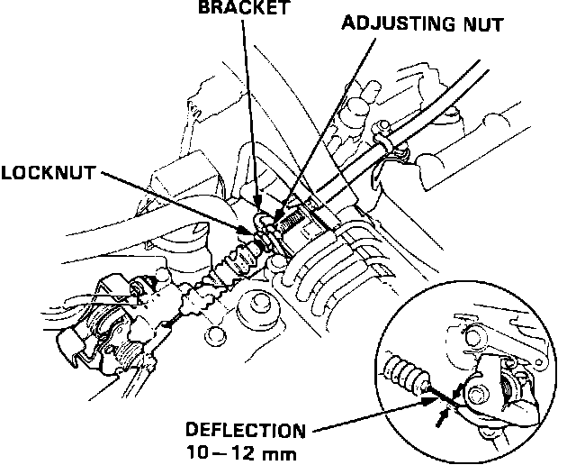
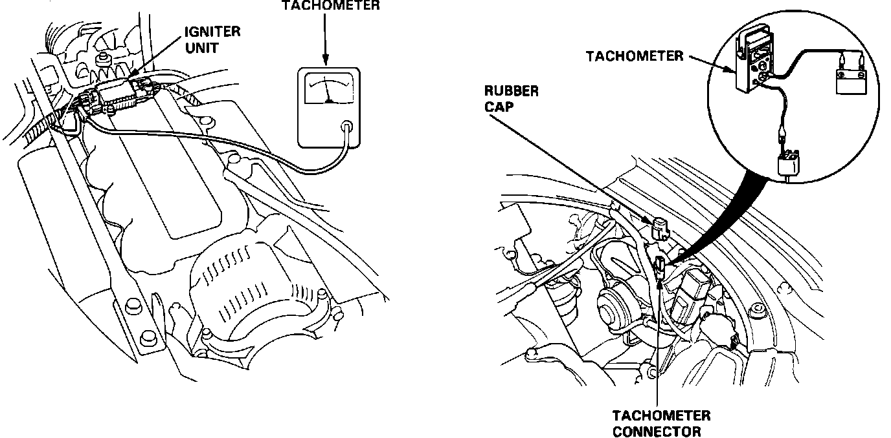
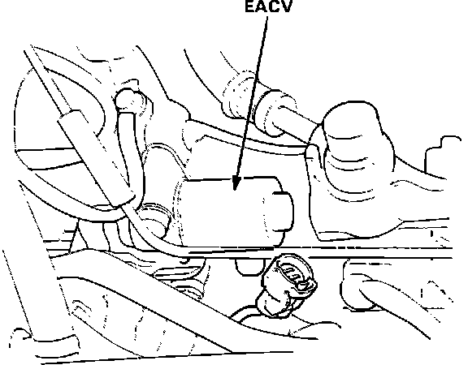
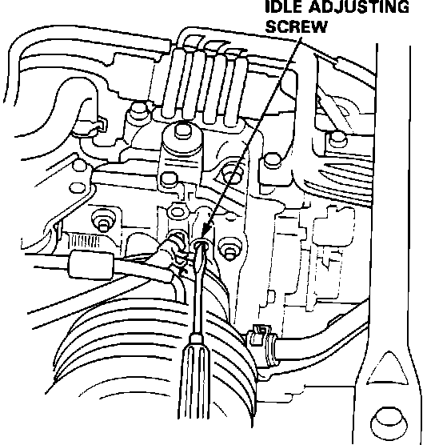

Computers and Control Systems: Adjustments
1. Start the engine and warm it to operating temperature (the cooling fan comes ON).2. Connect a tachometer.
3. Turn off the engine. Check that the throttle cable operates smoothly with no binding or sticking.
Throttle Cable Deflection:

4. Check cable free play at the throttle linkage. The cable deflection should be:
0.39-0.47 in (10-12 mm)
5. If free play is not within specifications, loosen the lock nut and turn the adjusting nut, until the freeplay is as specified.
6. Tighten the locknut and recheck the cable freeplay and if necessary readjust.
7. With the cable properly adjusted, check the throttle valve to be sure it opens fully when you push the accelerator to the floor. Also check that the throttle valve returns to the idle position when you release the accelerator.
Tachometer Connection:

8. Remove the rubber cap from the tachometer connector and connect a tachometer.
EACV Connector:

9. Disconnect the EACV connector.
10. Start the engine with the accelerator pedal slightly depressed. Allow engine speed to stabilize at 1000 RPM, then slowly release the throttle until the engine idles.
Idle Adjusting Screw:

11. With all accessories OFF, adjust the idle screw until the tachometer reads:
650 +/- 50 RPM (Manual)
600 +/- 50 RPM (Automatic, Park position)
12. Turn ignition OFF.
13. Re-connect EACV connector.
14. Disconnect CLOCK fuse (in main fuse panel) for 10 seconds to reset the ECU.
15. Restart the engine and allow to idle with all accessories OFF. The engine idle speed should remain stable at:
800 +/- 50 RPM (Manual)
750 +/- 50 RPM (Automatic).
16. If engine idle speed is not within specifications, refer to COMPUTERIZED ENGINE CONTROLS.
17. Cold engine idle speed is not adjustable. If engine idle speed is not within specifications refer to COMPUTERIZED ENGINE CONTROLS.